第一天：历史的回响
【在博物院的静默馆藏里，时间仿佛凝固；转身踏入总统府的门扉，又听见历史在青石板上响彻着一个时代的跫音。】
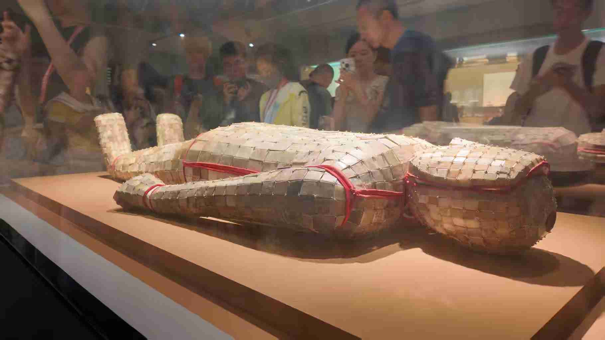 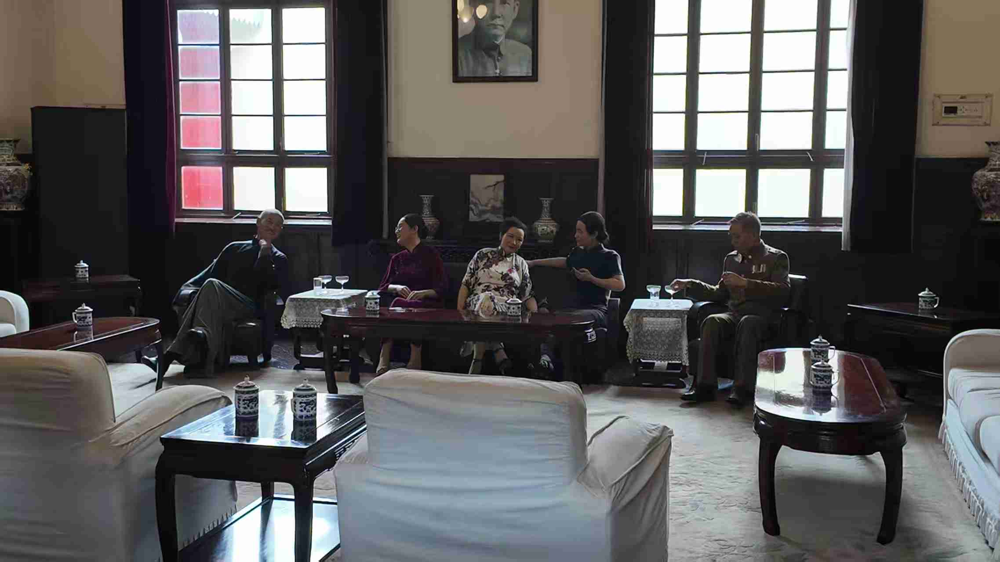第二天：山林的邂逅
【钟山麓下与灵鹿的邂逅，是山林的馈赠；神道石像的沉默与植物园里绣球花的无尽夏，共同编织了一幅生命与永恒交错的画卷。】
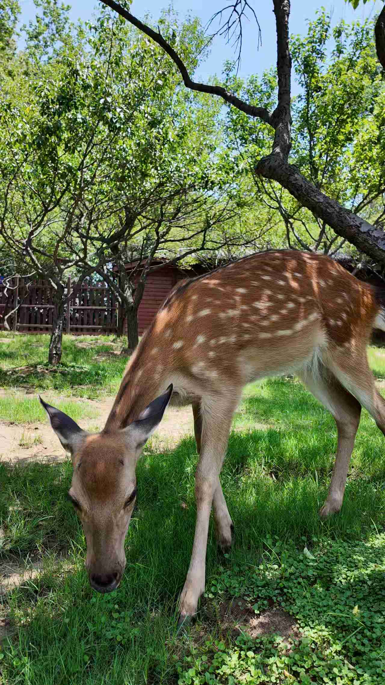 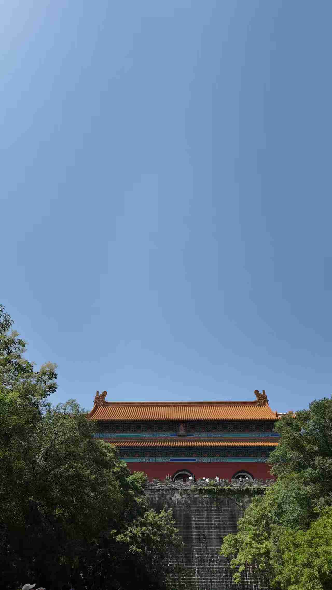第三天：梧桐下的告别
【梧桐叶筛落了满城的光阴，我们漫步其下；而在音乐台的穹顶下，鸽群振翅的瞬间，仿佛为这场青春的告别奏响了无声的乐章。】
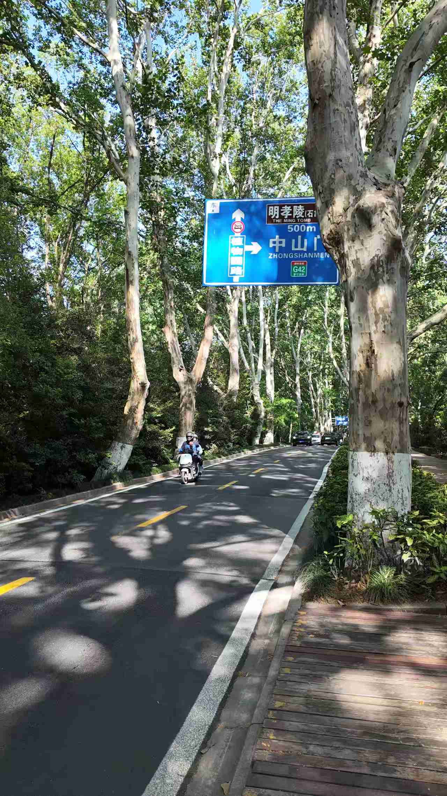 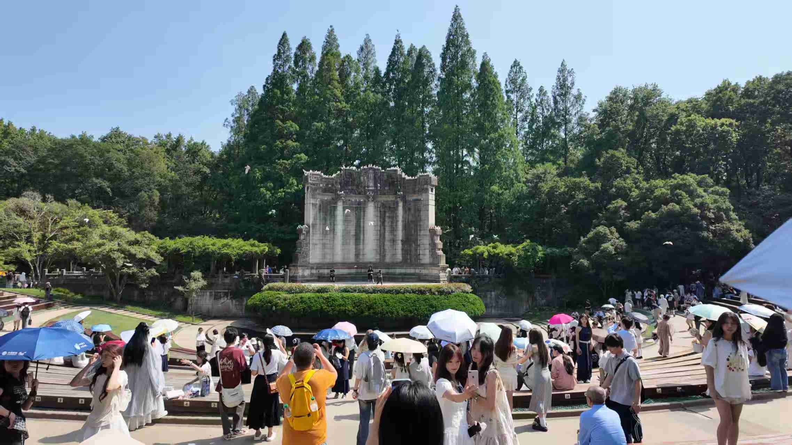一段青春与历史的对话
【在博物院的静默馆藏里，时间仿佛凝固；转身踏入总统府的门扉，又听见历史在青石板上响彻着一个时代的跫音。】
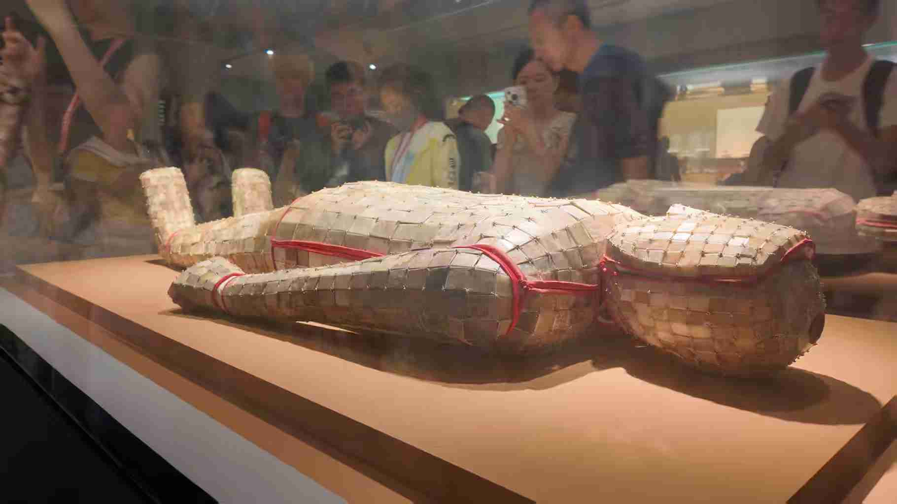 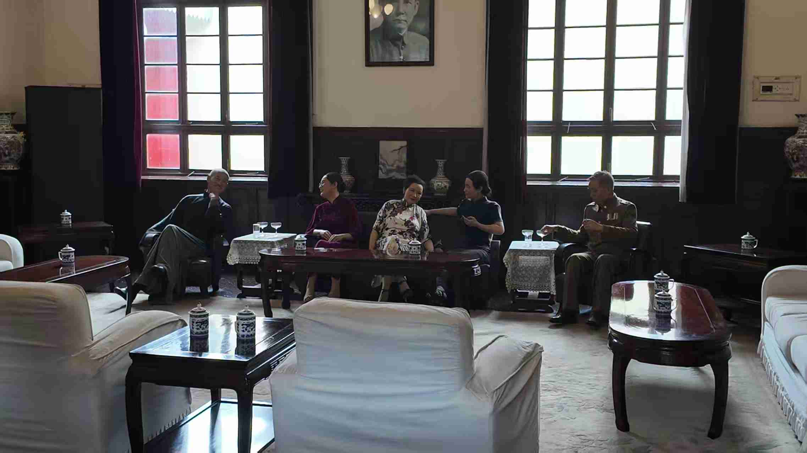【钟山麓下与灵鹿的邂逅，是山林的馈赠；神道石像的沉默与植物园里绣球花的无尽夏，共同编织了一幅生命与永恒交错的画卷。】
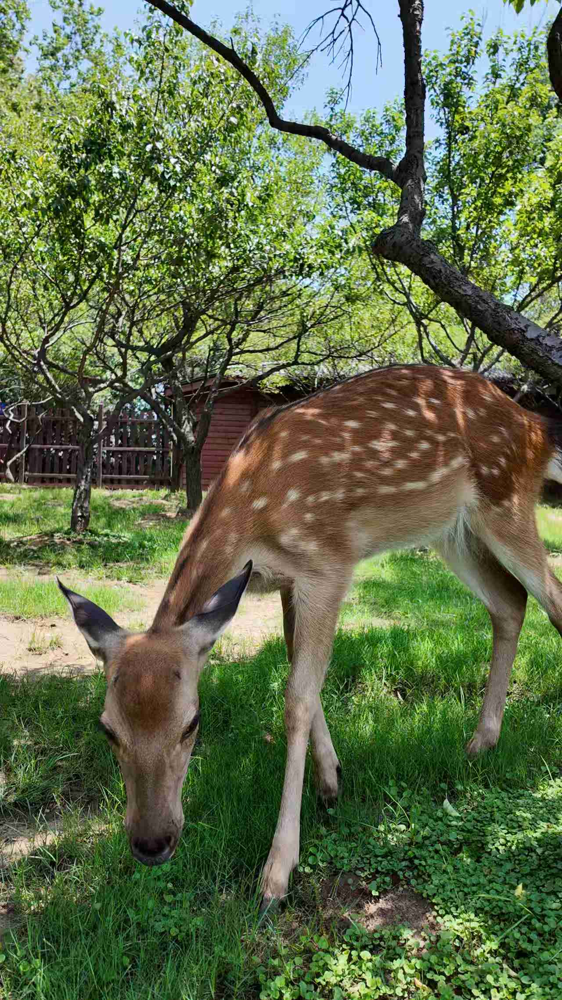 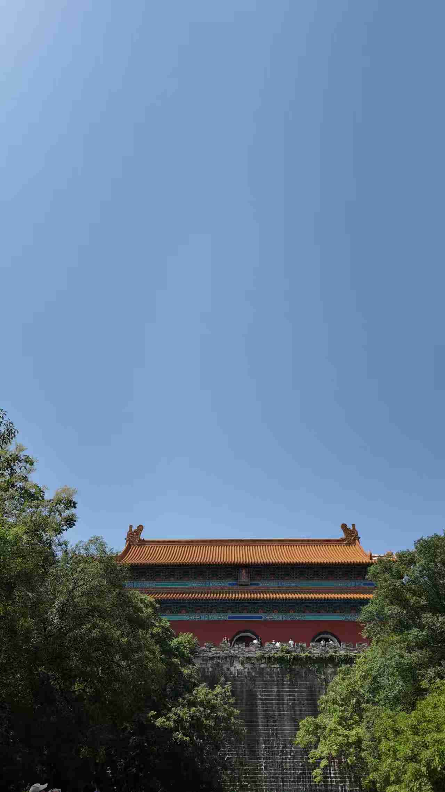【梧桐叶筛落了满城的光阴，我们漫步其下；而在音乐台的穹顶下，鸽群振翅的瞬间，仿佛为这场青春的告别奏响了无声的乐章。】
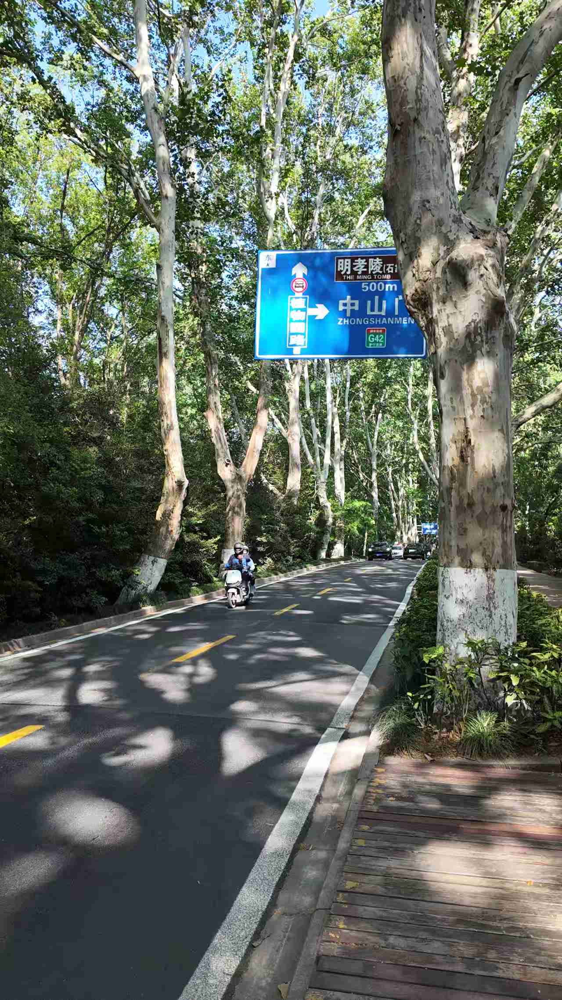 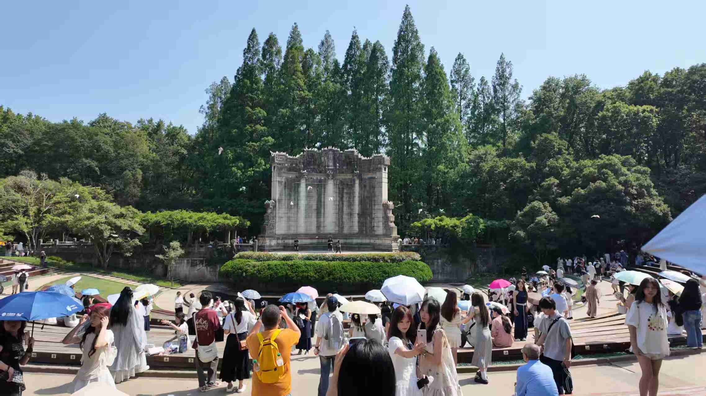